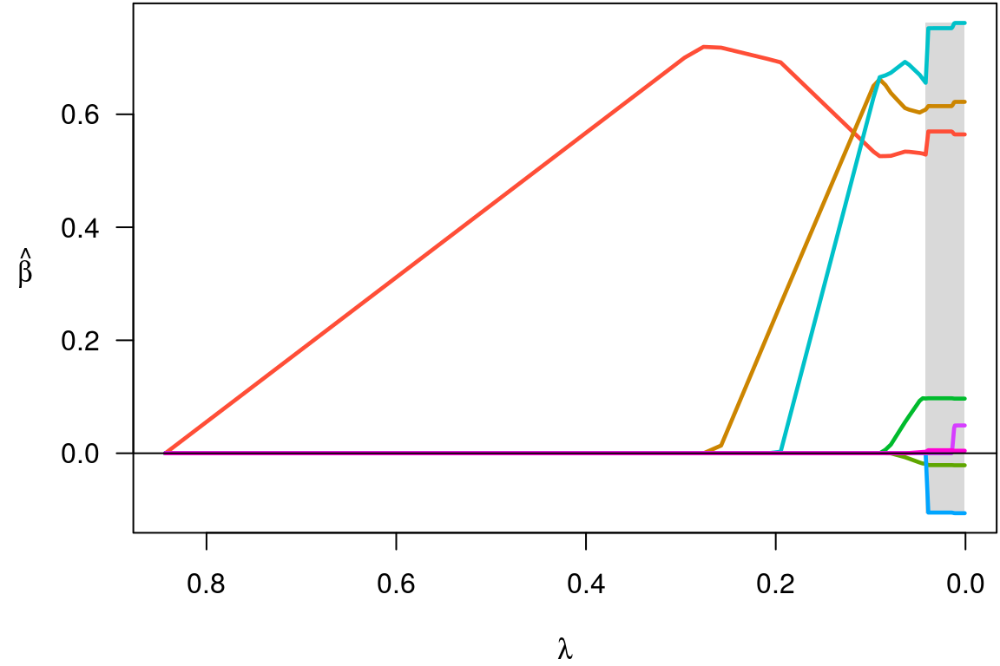
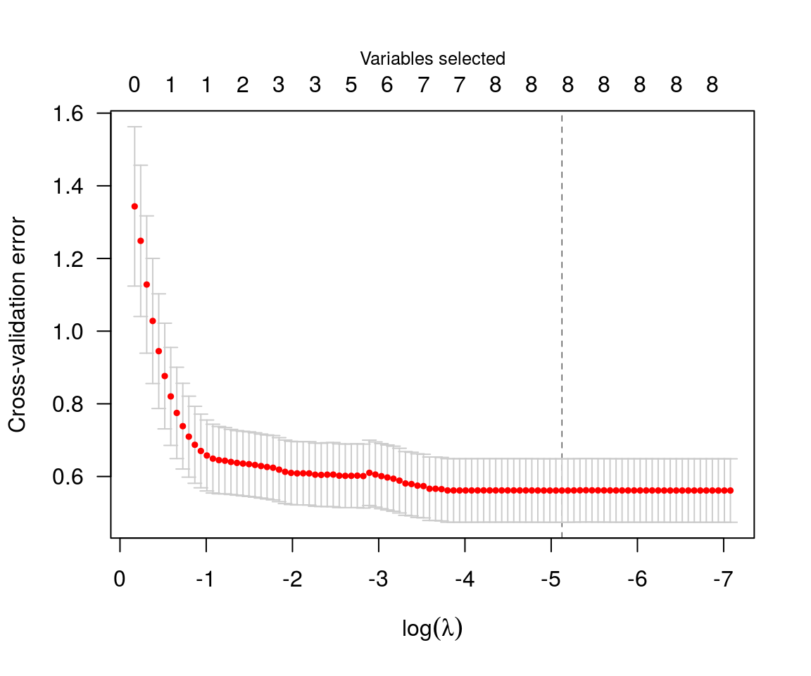
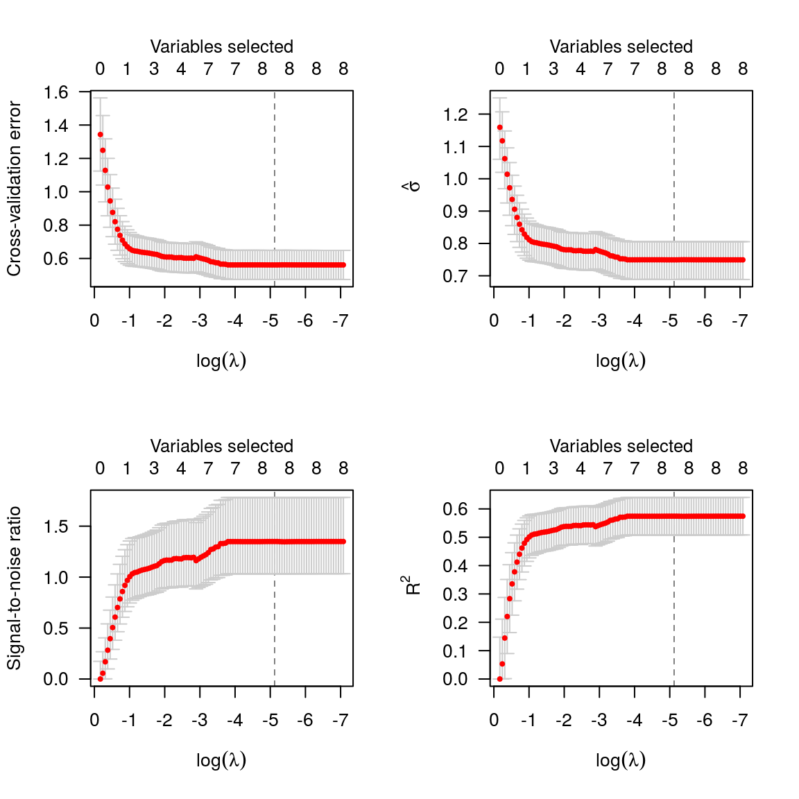

ncvreg fits models that fall into the penalized likelihood framework. Rather than estimating \(\bb\) by maximizing the likelihood, in this framework we estimate \(\bb\) by minimizing the objective function \[
Q(\bb|\X, \y) = L(\bb|\X,\y) + P_\lam(\bb),
\] where \(L(\bb|\X,\y)\) is the loss (typically, the negative log-likelihood), \(P_\lam(\bb)\) is the penalty, and \(\lam\) is a regularization parameter that controls the tradeoff between the two components. This article describes the different loss models available in ncvreg; see penalties for more information on the different penalties available.
Here the loss function is simply the squared error loss: \[ L(\bb|\X,\y) = \norm{\y-\X\bb}_2^2 \] this loss is the negative log-likelihood if the outcome \(\y\) follows a normal distribution with constant variance and mean given by \(\X\bb\).
In the Prostate data packaged with ncvreg, the response is the prostate specific antigen (PSA), measured on the log scale, and follows an approximate normal distribution; see ?Prostate for more information on the data set. Loading this data set into R,
By default, ncvreg fits a linear regression model with a minimax concave penalty (MCP):
This produces a path of coefficient estimates, which we can plot with

Although the least squares loss function is convex, the MCP penalty is not. The resulting objective function, therefore, may or may not be convex. ncvreguses a local convexity diagnostic, as described in Breheny and Huang (2011), to identify the regions of the coefficient path where the objective function is not convex; this is the gray shaded region in the plot. Users should be aware that solutions in this region may only be local optima of the objective function, not global ones.
Post-selection inference is available using the summary method:
summary(fit, lambda=0.05)
# MCP-penalized linear regression with n=97, p=8
# At lambda=0.0500:
# -------------------------------------------------
# Nonzero coefficients : 6
# Expected nonzero coefficients: 2.51
# Average mfdr (6 features) : 0.418
#
# Estimate z mfdr
# lcavol 0.53179 8.880 < 1e-04
# svi 0.67256 3.945 0.0018967
# lweight 0.60390 3.666 0.0050683
# lbph 0.08875 1.928 0.4998035
# age -0.01531 -1.788 1.0000000
# pgg45 0.00168 1.160 1.0000000The local marginal false discovery rate (mfdr) is given for each of the selected features. Roughly, this corresponds to the probability that the given feature is marginally independent of the residuals at that value of \(\lam\). In this case, it would appear that lcavol, svi, and lweight are clearly associated with the response, even after adjusting for the other variables in the model, while lbph, age, and pgg45 may be false positives selected simply by chance. For more information on summary() and its various options, see here.
Typically, one would carry out cross-validation for the purposes of assessing the predictive accuracy of the model at various values of \(\lambda\):

There are some options here:
par(mfrow=c(2,2))
plot(cvfit, type='cve')
plot(cvfit, type='snr')
plot(cvfit, type='scale')
plot(cvfit, type='rsq')
What to plot on the vertical axis. cve plots the cross-validation error (deviance); rsq plots an estimate of the fraction of the deviance explained by the model (R-squared); snr plots an estimate of the signal-to-noise ratio; scale plots, for family=“gaussian”, an estimate of the scale parameter (standard deviation); pred plots, for family=“binomial”, the estimated prediction error; all produces all of the above.
And a summary:
summary(cvfit)
# MCP-penalized linear regression with n=97, p=8
# At minimum cross-validation error (lambda=0.0018):
# -------------------------------------------------
# Nonzero coefficients: 8
# Cross-validation error (deviance): 0.54
# R-squared: 0.59
# Signal-to-noise ratio: 1.46
# Scale estimate (sigma): 0.733